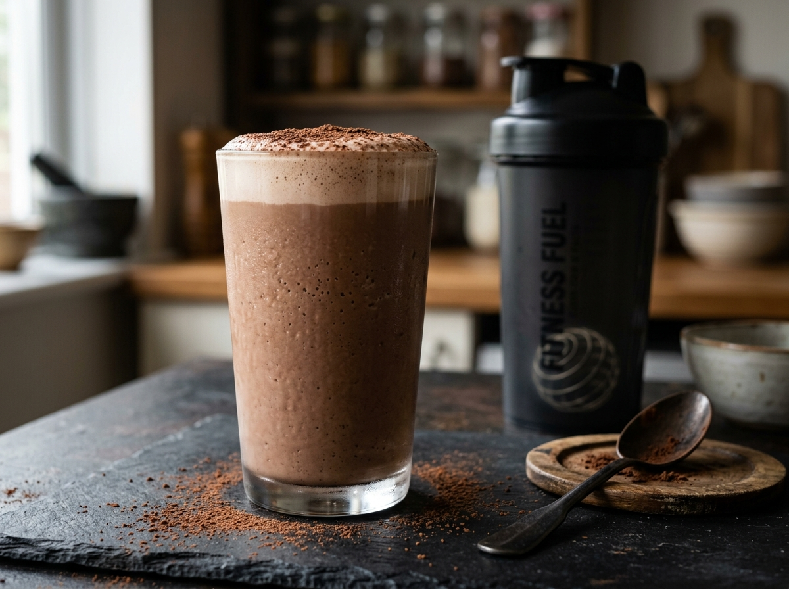

Густой, кремовый шоколадный шейк на 1% кефире с чистым сывороточным протеином и классическим какао «Золотой Ярлык». Без сахара, с легкой сливочной кислинкой и бархатистой пенкой. Готовится в шейкере за 2 минуты!

Налейте на дно чистого сухого шейкера ровно 250 г охлажденного 1% кефира. Заливать жидкость первой обязательно: если насыпать сухие порошки на сухое дно, они прилипнут к пластику и останутся неразмешанными.
Поверх кефира засыпьте 30 г сывороточного протеина без добавок, ровно 7 г какао «Золотой Ярлык» и 2–3 стика сахарозаменителя. По желанию добавьте щепотку ванилина для аромата домашней выпечки.
Обязательно установите в шейкер сетку-рассекатель или опустите металлический пружинный шарик. Плотно закрутите крышку и защелкните питьевой клапан. Энергично взбалтывайте 30–45 секунд: сначала вертикальными амплитудными движениями, затем круговыми.
Дайте шейкеру спокойно постоять 1–2 минуты. При взбивании сывороточный протеин образует объемную воздушную пенку — за минуту она осядет в плотную бархатистую сливочно-шоколадную шапку. Пейте сразу из шейкера или перелейте в охлажденный бокал!
Натуральное какао с жирностью 15% дает глубокий благородный вкус темного шоколада, полностью маскируя специфический молочный привкус чистого сывороточного белка без химических ароматизаторов.
Живые лакто- и бифидобактерии кефира в сочетании с полифенолами какао питают здоровую микрофлору кишечника и обеспечивают быстрое и легкое усвоение всей дозы белка (33 г).
Сочетание «быстрого» сывороточного белка из протеина и «медленного» казеина из кефира дает как мгновенную аминокислотную подпитку мышц, так и длительное чувство насыщения.
Сборник быстрых фитнес-десертов, протеиновых перекусов, чизкейков и сочных мясных блюд с точным расчетом КБЖУ для удержания мышц и комфортного снижения веса.